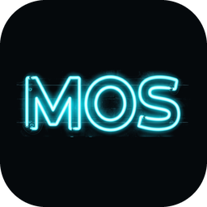

YakındaVirtualMOS
MehburOS temalı, tarayıcıda çalışan sanal masaüstü. Pencereler, dosyalar, uygulamalar ve MehburMC Launcher — kurulum gerektirmeden bilgisayarda, tablette ve telefonda.

YakındaMehburOS temalı, tarayıcıda çalışan sanal masaüstü. Pencereler, dosyalar, uygulamalar ve MehburMC Launcher — kurulum gerektirmeden bilgisayarda, tablette ve telefonda.